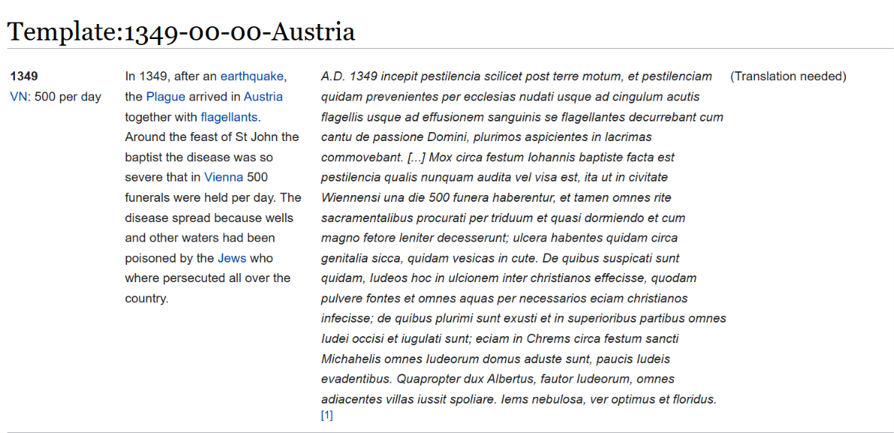
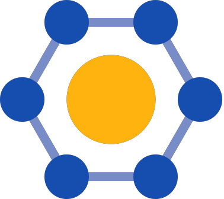
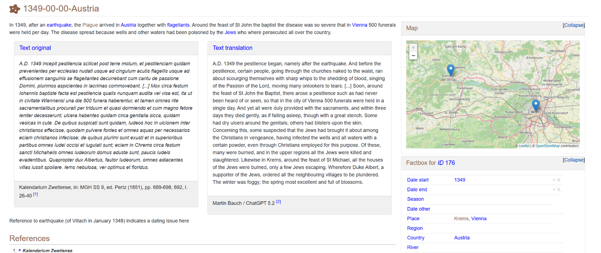

EpiMedDat
From Plain Wikitext to Semantic MediaWiki and Wikibase
MediaWiki Users & Developers Conference. November 2026 | Ljubljana
11 November 2026
What is EpiMedDat?
EpiMedDat is the Open Data Collection for Historical Epidemics and Medieval Diseases
About
- Started 2020 by GWZO
- Developing a collaborative, open, scientific database
- Collecting historical data on epidemic diseases in the Middle Ages
- Built on (plain) MediaWiki
Bringing historical epidemic diseases into structured shape
{{Tab5C
|TTemp = Template:1349-00-00-Austria
|SYear = 1349
|SMonth =
|SDay =
|EYear =
|EMonth =
|EDay =
|Summary = In 1349, after an [[earthquake]], the [[Plague]] arrived in [[Austria]] together with [....].
|Source = A.D. 1349 incepit pestilencia scilicet post terre motum, [...]
|Transl =
|TRef = {{TN}}
|ERef = <ref>Kalendarium Zwetlense, in: M[...]</ref>
|VN = 500 per day
}}
Templates are still software!
Overview-Pages (Places, Keywords)
- Every page had its own
{{Template}}, containing the data templates (hand curated!) - Content does not have to be stored redundantly
- But many, many templates have to be touched.
- Nice for collecting and displaying data - but not queryable.
Krems (city in Austria)
{{Template:Top Cat Nav}}
{{First}} It is a large city in [[Austria]].
== Events ==
{{Tab top}}
{{Template:Krems}}
== References ==
<references />
{{Places Austria nav}}
{{PC}}{{EMD}}{{YT}}
[[Category:Krems]]
[[Category:Places]]Let’s semantify this Wiki!
- Semantic MediaWiki?
- Wikibase?
- ➡️ What fits best?
Semantic MediaWiki or Wikibase?
SMW

Pro
- Existing Template Structure
- Dedicated request from researchers
- Entities are only
strings
Cons
- Thinking about SPARQLing in a federated way 🤩
Wikibase
Pro
- No large text fragments
- Thinking about SPARQLing in a federated way 🤩
Cons
- Entities aren’t linked to anything else
(
strings)
How did we decide?
Let’s do both!
Migration
Analyze Existing Data
- Get a full dump
- Separate disease data from Entity-Pages
- Analyze Categories for missing Entity-Pages and attributive values
Prepare and Refine
- Define Properties and SMW-Templates
- Refine Entities with OpenRefine (FactGrid)
- Create
datevalues - Fetch
coordinatesfor place names
Write the New Wiki
- Writing the data using
MWAPIand aPythonscript set. - Uploading to FactGrid (dedicated Wikibase for historians)
- Building Entity-Pages with
ASK-queries
Semantic EpiMedDat (since 2026-01)
New EpiMedDat Wikistyle

Compare Wikitext
Template-Style
{{Tab5C
|TTemp = Template:1349-00-00-Austria
|SYear = 1349
|SMonth =
|SDay =
|EYear =
|EMonth =
|EDay =
|Summary = In 1349, after an [[earthquake]], the [[Plague]] arrived in [[Austria]] together with [....].
|Source = A.D. 1349 incepit pestilencia scilicet post terre motum, [...]
|Transl =
|TRef = {{TN}}
|ERef = <ref>Kalendarium Zwetlense, in: M[...]</ref>
|VN = 500 per day
}}Semantic MediaWiki Style
{{Disease
|Date start=1349
|Place=Krems; Vienna
|Country=Austria
|Natural event=Earthquake
|Victim=500
|Victim count type=per day
|Disease=Plague
|Epidemic wave=Black Death
|Keyword=Flagellants; Jews; Pogrom; Water poisoning
|Reference=Kalendarium Zwetlense, in: [...]
|Summary=In 1349, after an [[earthquake]], the [[Plague]] arrived in [[Austria]] [...]
|Translation=A.D. 1349 the pestilence began, [...]
|Language=Latin
|FactGridID=Q1871822
}}Compare Page View
Additional data ingestion and linking to Wikibase
FactGrid
- OpenRefine was already used for data preparation
- FactGrid provides many more string-based properties
- Create an identifier for EpiMedDat
(
FactGrid-Prop:P1470)
Wikidata
- Additionally reconciled to Wikidata
- Wikidata → FactGrid Migration tool
- Set
unknown valuewith Wikidata-ID in FactGrid
EpiMedDat
Property:FactGridset on all disease pages and all entity pagesProperty:Wikidata IDset on all conceptual entity pages